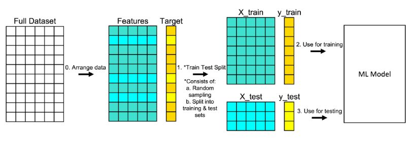

import numpy as np
import matplotlib.pyplot as plt
import pandas as pd
import seaborn as sns
# Run the following line to obtain the matplotlib figures in the notebook
%matplotlib inline
# We will also use sklearn but we will load the necessary modules when neededLab1: Linear Regression
Python environment
Anaconda
During this course we are going to use Python as programming language. Anaconda is an open-source distribution for Python. It is used for data science, machine learning, deep learning, etc. It comes with more than 300 libraries for data science. Anaconda helps in simplified package management and deployment.
To install it, go to Anaconda website.
Remark: if you have a Mac with M1 ship, you must install the 2022.05 release of Anaconda: (Anaconda Distribution Now Supporting M1).
Jupyter
During the labs, you must use Jupyter notebooks. The Jupyter Notebook is the original web application for creating and sharing computational documents. It offers a simple, streamlined, document-centric experience. Jupyter is installed by default when you install Anaconda. You can create notebooks using JupyterLab via your browser or using a text editor like VScode.
Predicting House Value: Boston dataset
In this lab we are going to use a dataset called Boston. It records the median value of houses for 506 neighborhoods around Boston. Our task is to predict the median house value.
Loading Data
Boston dataset
The dataset is available in scikit-learn or also here 🔗. Notice that the format/approach is not the same. You are free to use any of them, it is up to you to adapt your codes correctly.
There is mainly two approaches you need to know for instance:
- The features and the target variable are in the same dataframe. In this case you can use the argument
formula = target ~ featuresin certain fitting functions (like inols(), imitating R’s programming language functions). - The features and the target variable are separated in
Xandy.
1. Load these necessary libraries for this lab (install them if needed).
2. Load the Boston dataset.
from sklearn.datasets import load_boston
boston_dataset = load_boston()3. Print the value of the boston_dataset to understand what it contains.
print(boston_dataset.keys())dict_keys(['data', 'target', 'feature_names', 'DESCR', 'filename', 'data_module'])- data: contains the information for various houses
- target: prices of the house
- feature_names: names of the features
- DESCR: describes the dataset
To know more about the features run boston_dataset.DESCR.
The prices of the house indicated by the variable MEDV is our target variable and the remaining are the feature variables based on which we will predict the median value of houses in a district.
3. Load the data into a pandas dataframe using pd.DataFrame. Then print the first 5 rows of the data using head().
boston = pd.DataFrame(boston_dataset.data, columns=boston_dataset.feature_names)
boston.head() CRIM ZN INDUS CHAS NOX ... RAD TAX PTRATIO B LSTAT
0 0.00632 18.0 2.31 0.0 0.538 ... 1.0 296.0 15.3 396.90 4.98
1 0.02731 0.0 7.07 0.0 0.469 ... 2.0 242.0 17.8 396.90 9.14
2 0.02729 0.0 7.07 0.0 0.469 ... 2.0 242.0 17.8 392.83 4.03
3 0.03237 0.0 2.18 0.0 0.458 ... 3.0 222.0 18.7 394.63 2.94
4 0.06905 0.0 2.18 0.0 0.458 ... 3.0 222.0 18.7 396.90 5.33
[5 rows x 13 columns]We can see that the target value MEDV is missing from the data. We create a new column of target values and add it to the dataframe.
boston['MEDV'] = boston_dataset.targetRemark: the previous steps were avoidable if we loaded the data from csv given above using pd.read_csv().
Data preprocessing
4. Check if there are any missing values in the data.
Exploratory Data Analysis
Exploratory Data Analysis is a very important step before training the model. In this section, we will use some visualizations to understand the relationship of the target variable with other features.
5. Plot the distribution of the target variable MEDV. You can use the distplot() function from the seaborn library.
6. Calculate the correlation matrix and visualize it (you may use heatmap() from seaborn library). Name the features that are highly correlated with the target variable.
Correlation
The correlation coefficient ranges from -1 to 1. If the value is close to 1, it means that there is a strong positive correlation (linear tendency) between the two variables. When it is close to -1, the variables have a strong negative correlation.
Note
For a linear regression model, we select the features which have a high correlation with the target variable. Anyway there is some feature selection techniques you may use, one of them is Backward selection:
Backward selection:
- Start with all variables in the model.
- Remove the variable with the largest p-value — that is, the variable that is the least statistically significant.
- The new \((p − 1)\)-variable model is fit, and the variable with the largest p-value is removed.
- Continue until a stopping rule is reached. For instance, we may stop when all remaining variables have a significant p-value defined by some significance threshold.
7. Check for multi-collinearity between the features. More specifically RAD and TAX.
Tip
We should not select collinear features together for training the model. Check this link for one explanation.
Splitting the data into training and testing sets
Train test split is a model validation procedure that allows you to simulate how a model would perform on new/unseen data. Here is how the procedure works:

8. Split the data into training and testing sets. We are going to train the model with 80% of the samples and test with the remaining 20%. Use train_test_split() function provided by scikit-learn library
from sklearn.model_selection import train_test_split
# complete the code
X = ...
Y = ...
X_train, X_test, Y_train, Y_test = ...(, , test_size = ..., random_state=5)
# print the shapes to verify if the splitting has occured properly
print(X_train.shape)
print(X_test.shape)
print(Y_train.shape)
print(Y_test.shape)Simple Linear Regression model
In this part, we are going to build a simple linear regression model. We will choose LSTAT as a feature.
9. Plot MEDV in function of LSTAT.
10. Fit a simple regression model using LinearRegression() from sklearn.linear_model.
from sklearn.linear_model import LinearRegression
slm = LinearRegression()
slm.fit(..., ...)11. The LinearRegression() module from scikit-learn does not provide a statistical summary of the regression model. To obtain this summary, re-fit a model using ols() from statsmodels. Analyse the p-value from the summary and interpret.
12. Plot the regression model.
Model evaluation
13. Evaluate the model using MSE (Mean Squarred Error) and R2-score.
from sklearn.metrics import mean_squared_error
# train error (MSE)
y_train_predict = slm.predict(...)
mse_train = ...(..., ...)
print("The model performance for training set")
print('MSE is {}'.format(mse_train))
# test error
y_test_predict = slm.predict(...)
mse_test = mean_squared_error(..., ...)
r2 = r2_score(..., ...)
print("The model performance for testing set")
print('MSE is {}'.format(mse_test))
print('R2 score is {}'.format(r2))14. According to the plot in 9, the relationship between LSTAT and MEDV is not linear. Let’s try a transformation of our explanatory variable LSTAT. Re-do the steps from 9 to 13 but using the log of LSTAT. Do you obtain a better model?
Multiple Linear Regression model
15. Train a new model using all the variables of the dataset. Evalute the performance of the model.
16. Which features are significant for the model?
17. Apply backward selection to fit a model with the best subset of features.
18. Is the new model better than the last one with all the features?
19. In the last model we didn’t transform LSTAT. Re train the model using log(LSTAT) instead of LSTAT. Does this new model performs better?
ANOVA (ANalysis Of VAriances)
In this last part we will apply an analysis of variances (ANOVA) in order to test if there is a significant difference of means between two groups \(i\) and \(j\) (Consider group \(i\) is the suburbs bounding the river and \(j\) the suburbs which not). The hypotheses are
\[ H_0 : \mu_i = \mu_j \]
\[ H_1 : \mu_i \neq \mu_j \]
Where \(\mu_i\) is the mean of MEDV in group \(i\).
Anova
This analysis can be conducted during the exploratory data analysis part especially when the target is continuous and a feature is discrete.
20. In the Boston data set there is a categorical variable CHAS which corresponds to Charles River (= 1 if a suburb bounds the river; 0 otherwise). How many of the suburbs in this data set bound the Charles river?
21. Create Boxplots of the median value of houses with respect to the variable CHAS. Do we observe some difference between the median value of houses with respect to the neighborhood to Charles River?
22. Calculate \(\mu_i\) and \(\mu_j\).
23. Apply an ANOVA test of MEDV with respect to CHAS. What do you conclude ?
Extra
Fit your chosen multiple linear regression model from scratch, using:
- Normal equation
- Gradient descent
Compare their performance in term of accuracy and speed. Compare them to Scikit-learn’s algorithm performance.